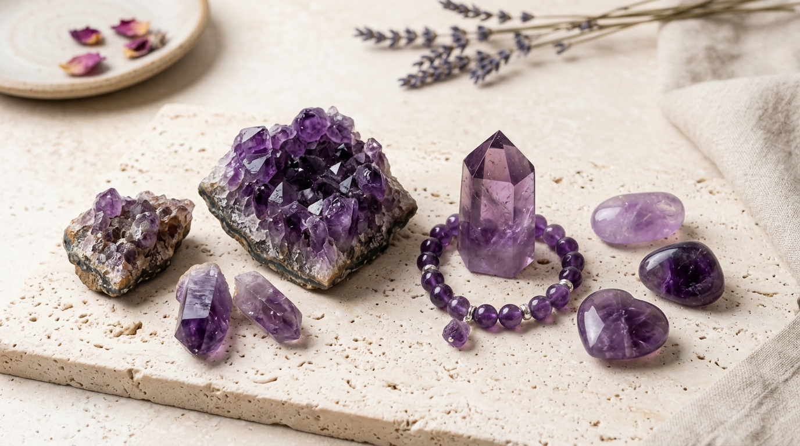

What Amethyst usually looks and feels like.
Ranges from pale lilac to deep violet-purple, with natural colour variation between and within individual beads. In jewellery, that usually matters as much as the meaning attached to the stone. Buyers often decide faster when the stone’s visual direction already fits their taste.
Deep purple beads with natural colour variation — darker and lighter patches within each bead give a rich, layered appearance on the wrist.
Traditionally associated with clarity of thought and restraint across ancient Greek, Roman, and medieval European cultures, where it was also linked to temperance. Gem Intent treats that background as context rather than proof. The aim is to make the stone easier to compare, not to overstate what it can do.
What to check before you buy.
Where to buy Amethyst
Three options below — from our own store, Amazon India, and specialist sellers. All links open in a new tab.
Curated Amethyst Bracelet — Gem Intent Pick
We are currently building our own curated bracelet store. When live, this will show hand-selected amethyst bracelets we have personally verified for quality, bead size, and natural stone authenticity — shipped directly.
Natural Amethyst Bracelet
Natural 8mm beads · Certificate of authenticity · 4.3★ · 100+ bought last month
Authentic Amethyst Bracelet
Specialist crystal retailer · Authenticity guarantee · 500k+ customers
Shop → EtsyHandmade Amethyst Bracelets
Artisan sellers · Filter 5★ shops · Look for close-up bead photos
Browse →Some links above earn a small commission at no extra cost to you. This does not affect which products we highlight. Disclosure →
Choosing the best format.
Care and practicality.
Where Amethyst usually works best.
Amethyst is often a sensible first look for readers focused on calm, stress relief, clarity, sleep support. It can also work well when the stone’s colour and finish fit the person’s existing jewellery or gift style.
The most reliable buying decision is usually made in this order: intent first, look second, format third, listing quality fourth.
FAQ
Is Amethyst a good daily-wear option?
Amethyst can work well when the format matches its practicality. With a hardness of 7, the safest choice depends on whether you want a bracelet, ring, pendant, or loose piece.
What should I check before I buy Amethyst?
Dyed glass is the most common substitute; genuine amethyst feels noticeably cool to the touch and warms slowly in the hand, while glass warms almost immediately.
How should I care for Amethyst?
Wipe with a soft damp cloth and dry immediately; avoid prolonged sunlight which gradually fades the purple to pale lavender.
What kind of person usually likes Amethyst?
Amethyst is often chosen for calm, stress relief, clarity and by readers who respond to its visual mood as much as its symbolic meaning.